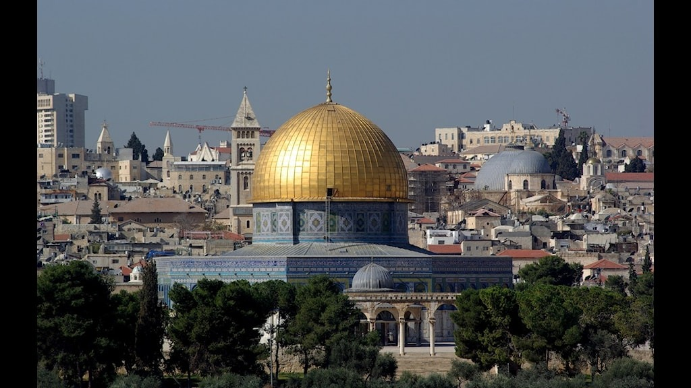
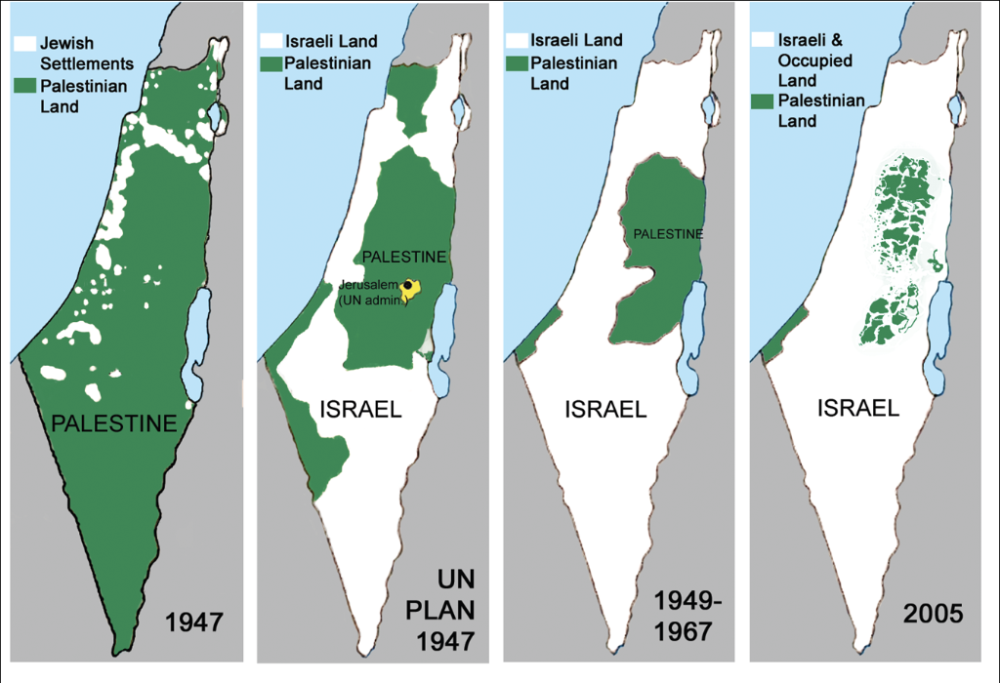
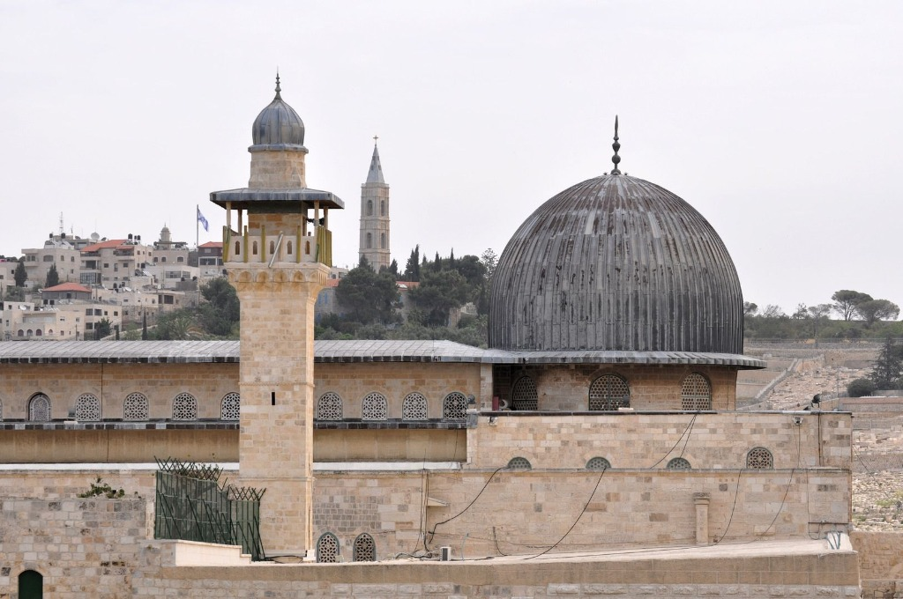
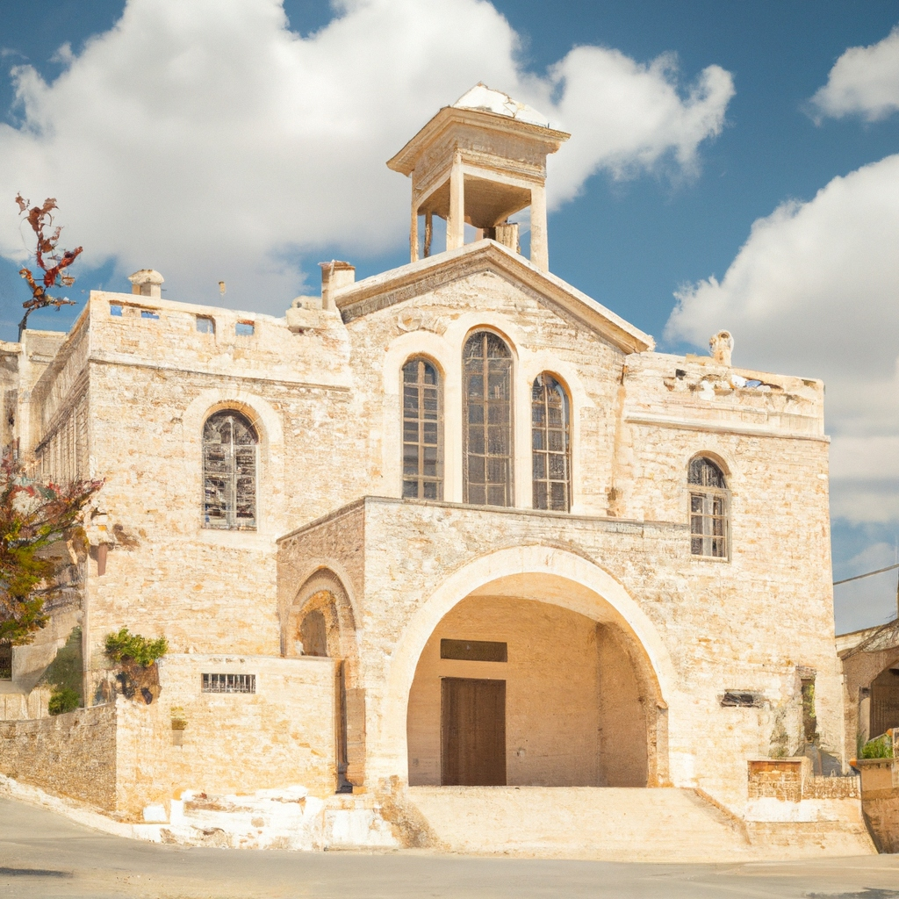
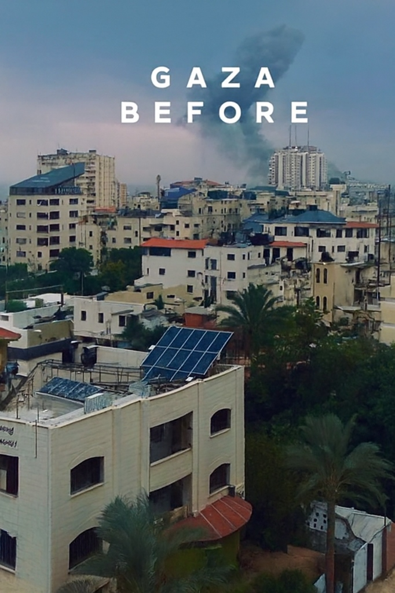
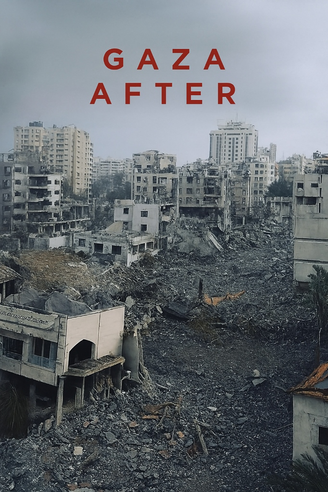
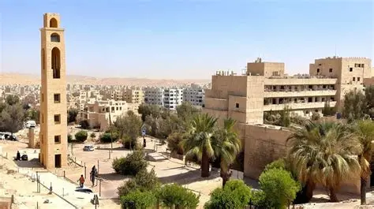
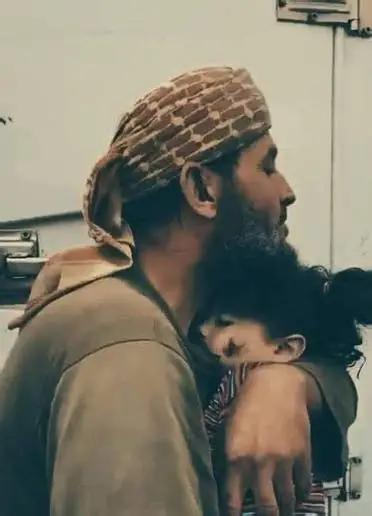
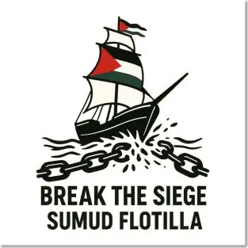

State of Palestine
Map
Flag
Key Info
Brief History
Gaza
Al-Quds
Ramallah
Nablus
Map
Flag
Key Informations
Capital: Al-Quds

Area: 27.027 km2

Religion: Islam(predominant) & Christianity.


Main cities: Al-Quds, Gaza, Ramallah, Nablus
 
Open Gaza Awareness

Brief History

